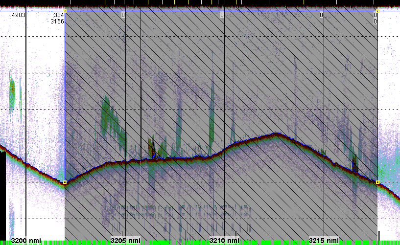
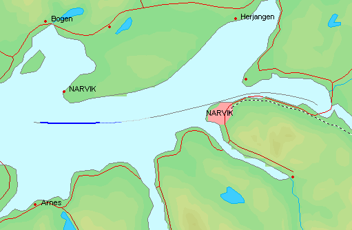

Sometimes a whole ping range must be excluded from the interpretation. This may, for example, be because of a detour from the survey line because of trawling.
The effect of exclusion:
To exclude a ping range, right-click on a region and select Exclude region range from the context menu. Only the visible part is excluded. If necessary, zoom to cover the range to be excluded or create a region with the desired range. Excluded ranges can be re-included by right-clicking on a region and selecting Include region range. The excluded ranges will be shown in the echogram by the masking overlay as black diagonal lines on a semi-transparent gray overlay as shown below.

The excluded segments are also shown in the map by the survey line overlay as thin dotted lines as shown below.
